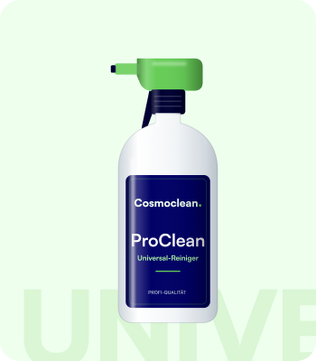
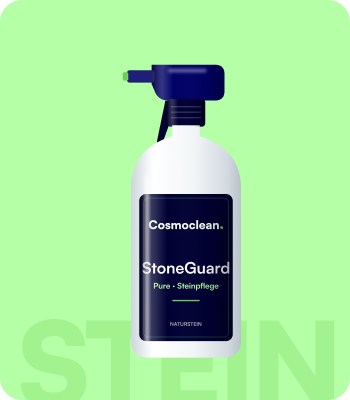

Das All-in-One für Profis und Anspruchsvolle Zielgruppe: Professionelle Reinigung + anspruchsvolle Privatnutzer Einsatz: Polster, Hartflächen, Naturstein – alles mit einem Produkt
Tiefenreinigung für Sofas, Sitzbezüge und Teppiche – damit Polster wieder wie neu aussehen.

Schonende Pflege für Marmor, Granit und Schiefer – gründlich sauber, ohne den Stein zu strapazieren.